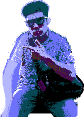

I'm misterk7_- // Khaan
A creative technologist who's proficient in digital graphics, design and media production.

I work between art and code, building experiences on top of platforms and experimenting with technologies both old and new. I love creating videos and media online, and recently undertook part in a unique digital subculture to document and create for that you can view here.
It's quiet here... for now.
- Khaan
My blog will host my deepest thoughts on nobody's internet. Ventures will set out my various online projects. Portfolio will showcase the best of my work. Legacy will provide a rich interactive timeline about my online journey. In general, you can find me on Bluesky where I often post about my interests, projects and status.